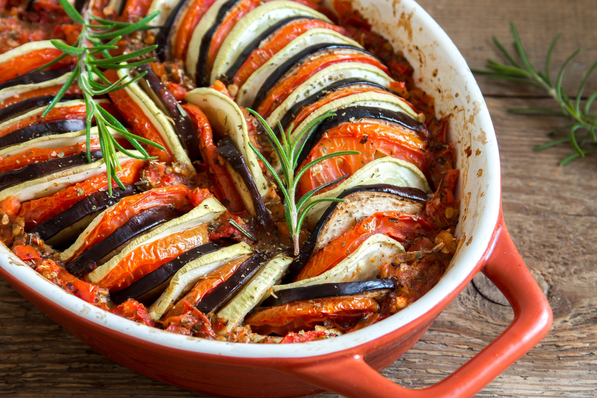

Ratatouille

Wanna some health and delicious food? well this is the right choice.
Ratatouille might not have the better look but for sure is a good option for a family meal at sundays.
Ingredients
- 2 Zucchinis
- 2 Eggplants
- 2 Onion
- 3 Tomatoes
- 1 green pepper
- 1 yellow pepper
- 1 red pepper
- Olive oil to taste
- Rosemary to taste
- Basil to taste
- Garlic to taste
- Salt to taste
- Bay leaf to taste
- Tomato sauce
Cook Time: 40 minutes
Directions
- Slice the vegetables
- Cover the bottom of the pan with tomato sause.
- Assemble everything interspersing with vegetables.
- Smash the garlic and spread over, adding salt and rosemary to taste.
- Drizzle with a little olive oil and bake with baking paper or aluminum.
- Take to the oven for 40 minutes at a temperature of 180° C to 200° C.
Return to top
Return to main page